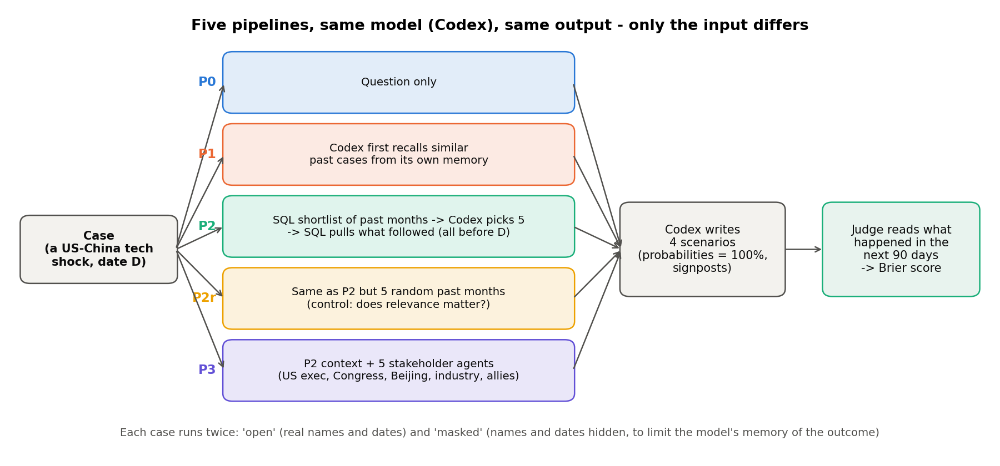
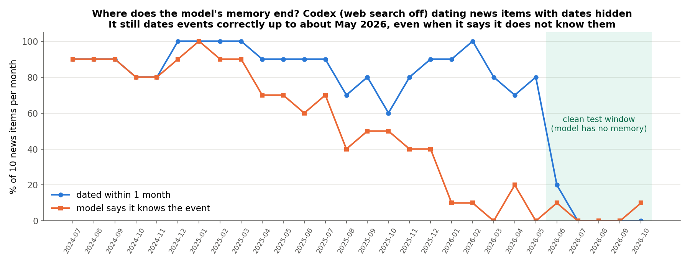
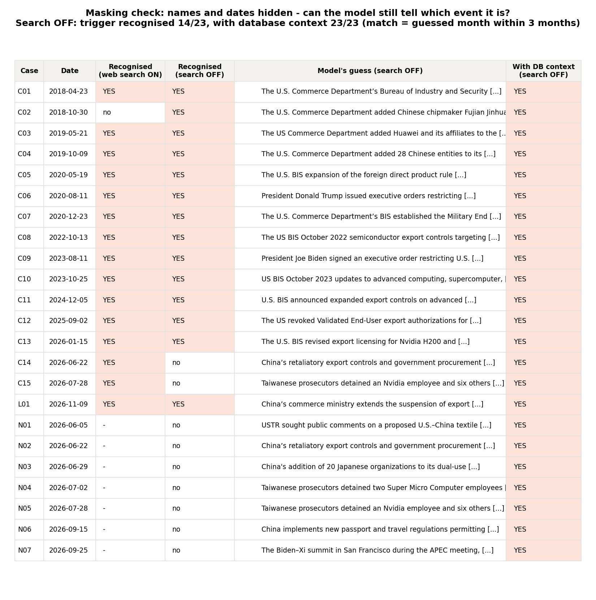
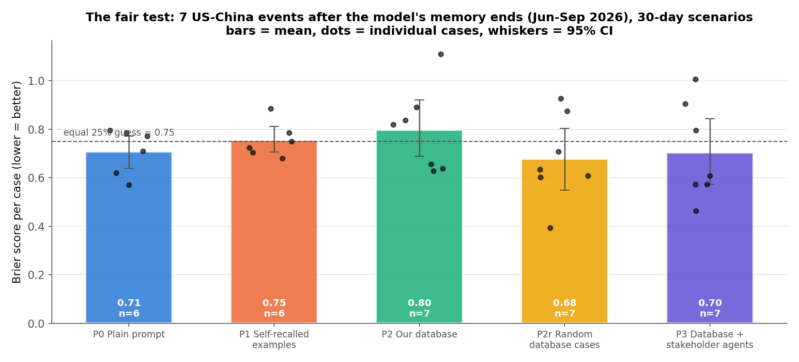
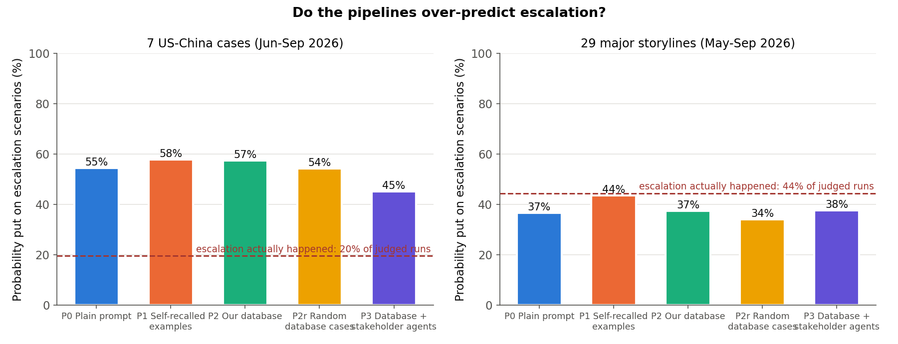
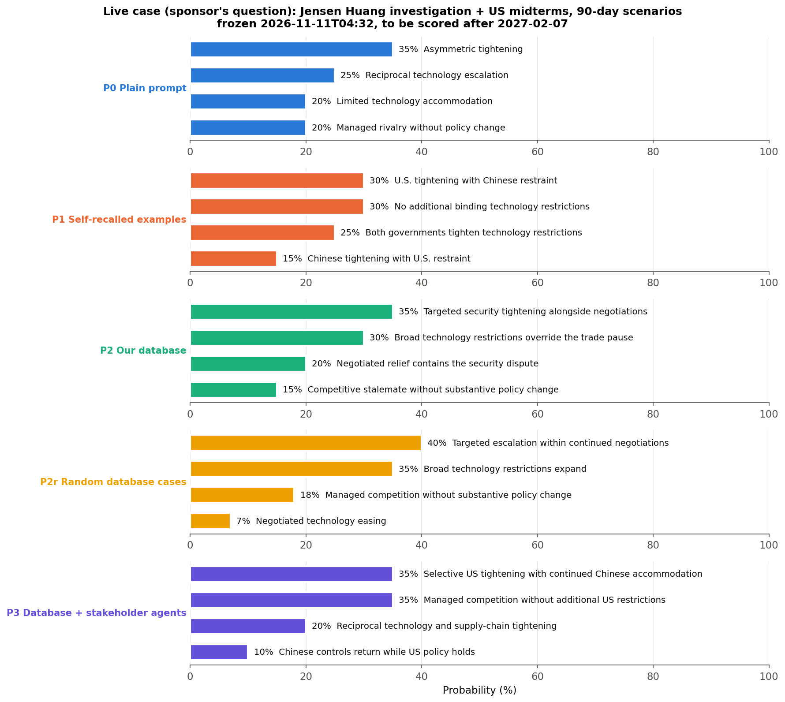
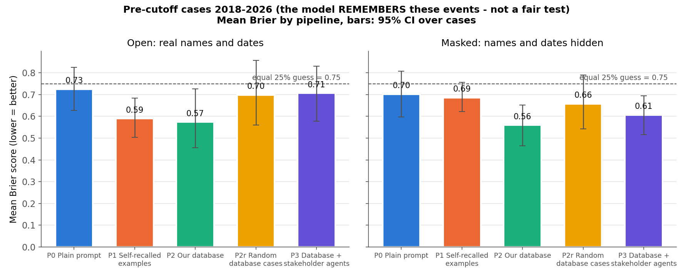

We tested five ways of asking the same model (Codex) for 4 scenarios with probabilities after a US–China technology shock, then checked the scenarios against what actually happened.
Detailed log of the scenario experiments. The broad 29-storyline test and the summary are on the "Jensen Huang question" page.The model was searching the live web. Codex CLI looks things up online by default, through two separate tools. Both are now switched off for every call in the project. A re-check showed the tracker's results were not affected (top-5 storylines identical, 91.5% overlap overall, within normal run-to-run noise).
Even offline, the model remembers events up to about May 2026. Hiding names and dates does not stop it recognising earlier cases. A fair test needs events from June 2026 onward.
On the 7 fair cases, no pipeline clearly beat an even 25% spread. With 3 runs per case, one difference is clear: past cases chosen from our database (P2) did worse than randomly chosen ones (P2r) in all 7 cases. On the broader 29-storyline test this gap disappeared (0.66 vs 0.65), so it was a small-sample effect.
After US–China shocks, all pipelines over-predict escalation. They put 45–58% on escalation scenarios, but escalation happened in only 20% of cases. Across 29 broader storylines the balance was about right. Mostly, nothing much changed within 30 days. The stakeholder agents were the least biased.
Scenarios for the Jensen Huang question are frozen (Jensen Huang investigation + midterms). All five pipelines put targeted US tightening first, at 30–40%. They will be scored after 7 Feb 2027.
Every pipeline uses the same model and must give the same output: 4 mutually exclusive scenarios whose probabilities add up to 100%, each with a checkable test and early-warning signs. Only the input changes.

We hid company names, people and dates, then asked the model which event it was. With web search on, it named 15 of 16 cases. With search off it still named every case up to January 2026, from memory.


These are every US–China technology, trade or AI event in our database from June to September 2026. Each was scored on a 30-day horizon. The case list was written into the plan before any pipeline ran on it.
| Case | Date | Event |
|---|---|---|
| N01 | 2026-06-05 | US proposes a managed-trade mechanism with China |
| N02 | 2026-06-22 | China's export controls on 10 US companies |
| N03 | 2026-06-29 | China blacklists 20 Japanese organisations (dual-use) |
| N04 | 2026-07-02 | Supermicro staff detained in Taiwan (Nvidia servers to China) |
| N05 | 2026-07-28 | Nvidia employee detained in Taiwan over chip smuggling |
| N06 | 2026-09-15 | China's exit bans for export-control violators |
| N07 | 2026-09-25 | US–China deal: tariff cuts and an AI dialogue |

| Pipeline | Mean Brier | 95% CI | Cases | Reading |
|---|---|---|---|---|
| P0 Plain prompt | 0.71 | 0.64–0.77 | 6 | Slightly better than an even spread |
| P1 Self-recalled examples | 0.76 | 0.71–0.81 | 6 | No gain over P0 (+0.07, not significant) |
| P2 Our database | 0.80 | 0.69–0.92 | 7 | Worse than P0 in 5 of 6 cases (+0.08, not significant); worse than random analogues in 7 of 7 (+0.12, CI +0.06 to +0.18) |
| P2r Random database cases | 0.68 | 0.55–0.80 | 7 | Best mean |
| P3 Stakeholder agents | 0.70 | 0.57–0.84 | 7 | Better than P2 in 6 of 7 cases (−0.09, not significant); about equal to P0 |
Lowest score is best, so on these 7 cases P2r (random past cases from our database) ranks first, then P3 (stakeholder agents), then P0 (plain prompt). The gaps between them are small, though:
| Comparison | Difference | 95% CI | Better in | Verdict |
|---|---|---|---|---|
| P2r vs P3 | −0.03 | −0.14 to +0.11 | 5 of 7 | Too close to call |
| P2r vs P0 | −0.04 | −0.14 to +0.09 | 4 of 6 | Too close to call |
| P2r vs P2 | −0.12 | −0.18 to −0.06 | 7 of 7 | Clear: random beats chosen analogues |
So the supported conclusion is narrower than "P2r is the best pipeline". Giving the model background from our database helps a little or not at all, and choosing "similar" past cases makes the scenarios worse. With only 7 cases, P2r, P3 and P0 cannot be separated yet. The 29-storyline test below is meant to settle this.
The judge could not decide in 23 of 105 runs, because 30 days of Wikipedia and Federal Register records are thin. Scenarios written with chosen database analogues (P2) were almost always decidable (1 of 21 unclear), against 7 of 21 for P0. They are more concrete and easier to check, but more often wrong.
We tagged each scenario as escalation, status quo or de-escalation, then compared with what happened. Across the 7 clean US–China cases (105 runs), the judged outcome was "status quo" 79% of the time and escalation only 20%. Yet every pipeline put about half its probability on escalation.

This is a calibration problem, not a retrieval problem. P2 is no more escalation-prone than the plain prompt. The model treats a shock as the start of a spiral, while in 30 days things mostly stay where they are. The next variant to test gives the model the historical base rate, for example "in past 30-day windows after similar shocks, the status quo held in about 4 of 5 cases".
Case: NVIDIA opens an investigation into its CEO after US intelligence reported that a close associate was a Chinese spy (8 Nov), shortly after midterms in which Democrats were projected to win both chambers. The scenarios cover the next 90 days.

Fifteen US–China technology shocks from 2018 to 2026, from the ZTE ban to the Nvidia smuggling arrests. The model remembers most of them, so good scores here mostly show recall. Database retrieval looks helpful here (P2 0.56–0.58 against P0 0.70–0.73), the opposite of the clean result. That is what memory contamination looks like.

Checks: the model reports no search tool; a shell request to Wikipedia fails inside its sandbox; earlier cached answers are never reused (new cache key). Model: gpt-6.1-sol via the user's Codex subscription.
Protocols are frozen in docs/PLAN.md, sections IIIs and IIIs-b. Changes are logged in docs/CHANGELOG.md, C166–C178. All data is public: Wikipedia Current Events, US Federal Register, EU/UK sanctions lists, central-bank releases.